- 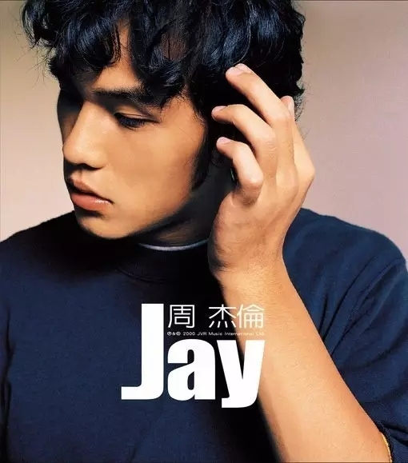
- 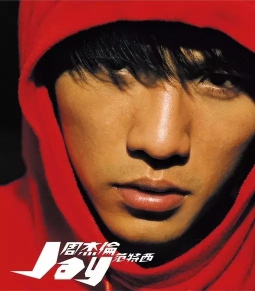
- 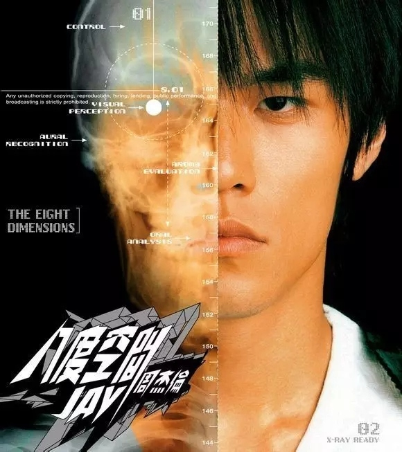
- 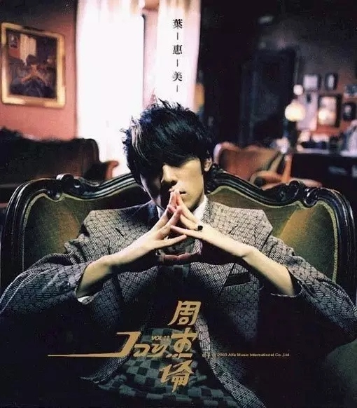
- 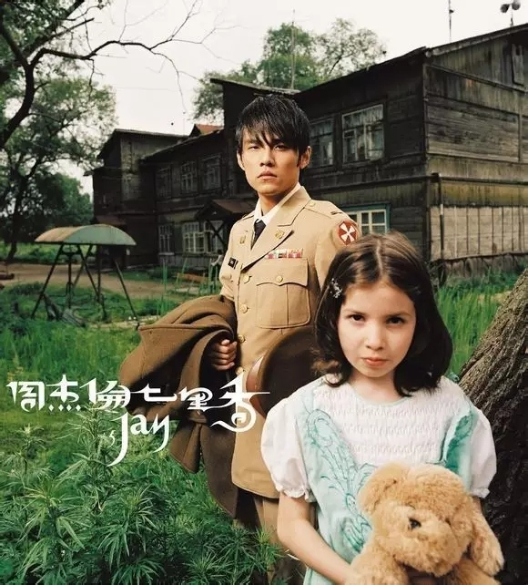
- 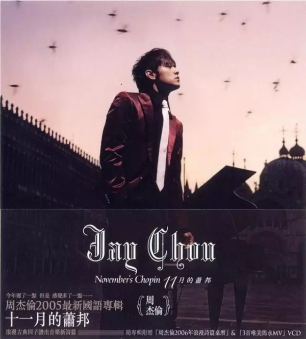

- 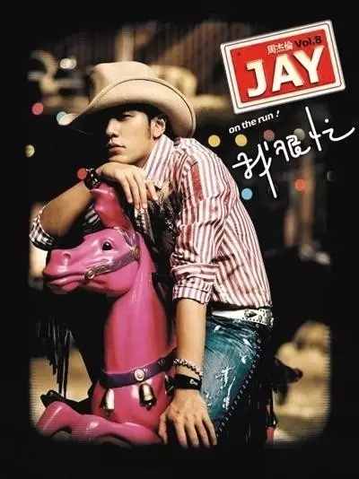
- 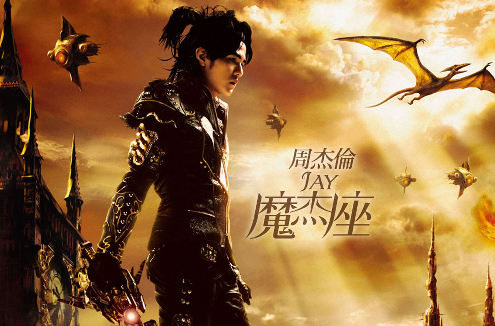
- 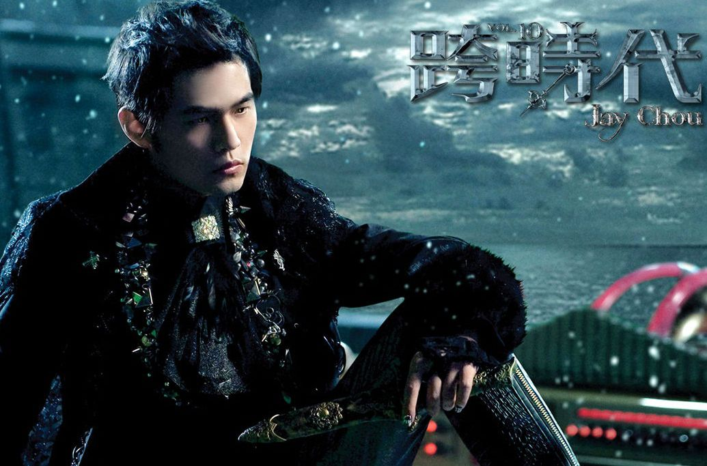
- 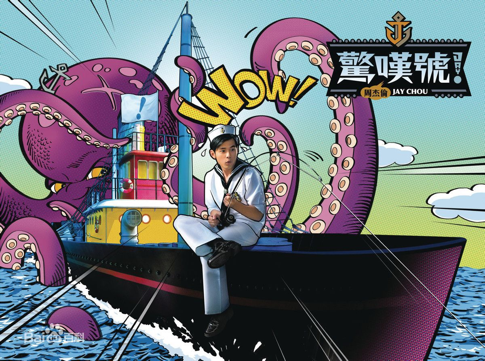
- 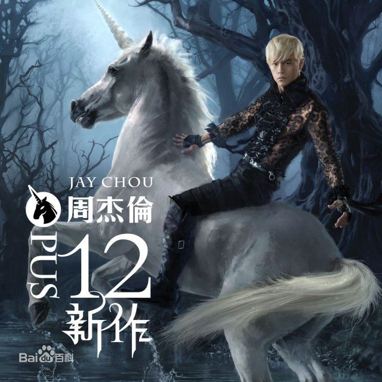
- 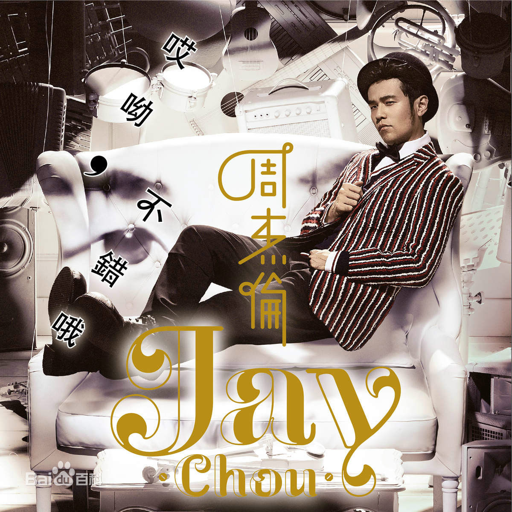
- 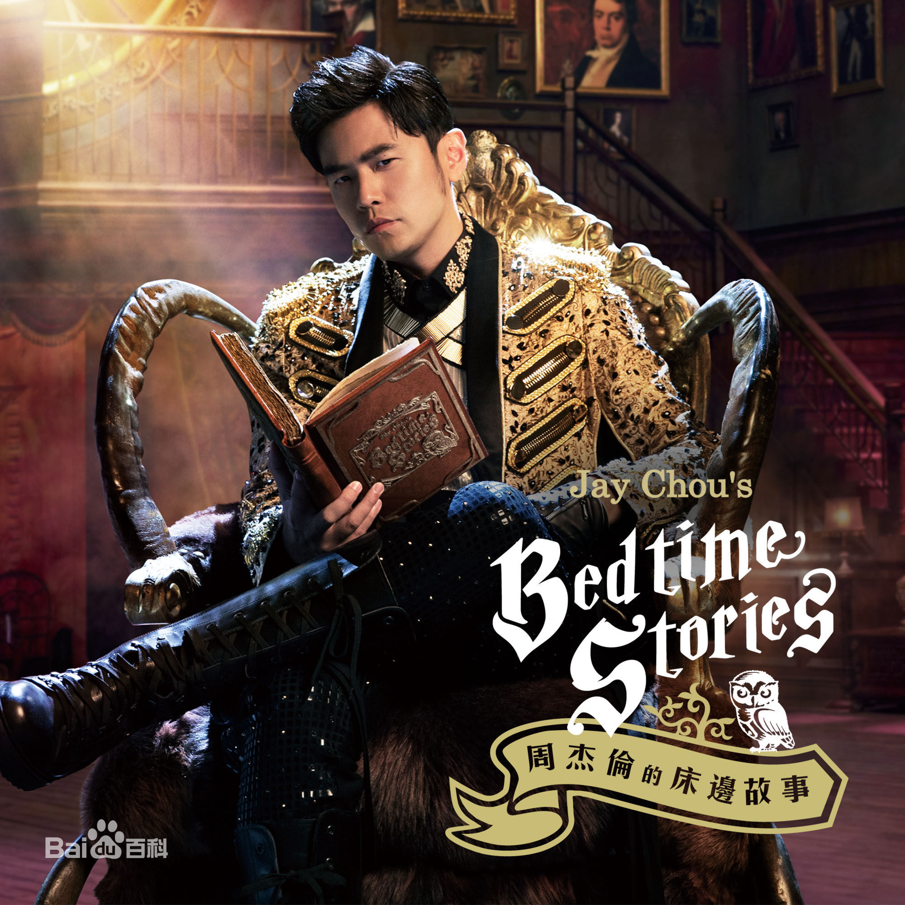
Jay
2000年杰伦发了自己第一张同名专辑，那时候我刚刚上小学，音乐欣赏能力还停留在数鸭子时期，并不知道他是谁。长大后有幸听到杰伦的歌，一听就是一整个青春~
| 1.可爱女人 |
2.完美主义 |
3.星晴 |
4.娘子 |
5.斗牛 |
| 6.黑色幽默 |
7.伊斯坦堡 |
8.印第安老斑鸠 |
9.龙卷风 |
10.反方向的钟 |
范特西
当年双截棍让多少卖双截棍的销量暴增，那时候我还误会杰伦他爸家暴他。。。当时想这唱的是啥啊，现在我一女生能唱下来杰伦的大部分rap，莫名觉得自己好酷~
| 1.爱在西元前 |
2.爸我回来了 |
3.简单爱 |
4.忍者 |
5.开不了口 |
| 6.上海一九四三 |
7.对不起 |
8.威廉古堡 |
9.双截棍 |
10.安静 |
八度空间
龙拳是我听杰伦的第一首歌，MV是给百事做广告，当时觉得杰伦好屌啊，半兽人MV中在塔上的杰伦做的广播体操太卖力，最后的战役莫名就很应当时的非典背景，还有我最喜欢的慢歌分裂。。。这张专开始，巅峰时期即将开启~
| 1.半兽人 |
2.半岛铁盒 |
3.暗号 |
4.龙拳 |
5.火车叨位去 |
| 6.分裂 |
7.爷爷泡的茶 |
8.回到过去 |
9.米兰的小铁匠 |
10.最后的战役 |
叶惠美
那个时候三年二班的同学一个个都自豪满满的，这张专内容上有呼吁保护环境、讽刺伪艺术的，有禁毒的，有不要太争名夺利的，曲风上有歌剧、复古音乐（以父之名），有原住民合唱（梯田），还加入了中国风，虽然早期有娘子，但东风破让我爸妈也发现原来他的慢歌也挺好听的~
| 1.以父之名 |
2.懦夫 |
3.晴天 |
4.三年二班 |
5.东风破 |
| 6.你听得到 |
7.同一种调调 |
8.她的睫毛 |
9.爱情悬崖 |
10.梯田 |
| 11.双刀 |
七里香
啊啊，我已经要上五年级的时候，七里香来了。还有外婆，开始了与金曲奖的周旋，以及老爱挂嘴边的‘在我的地盘，你就得听我的’~
| 1.我的地盘 |
2.七里香 |
3.借口 |
4.外婆 |
5.将军 |
| 6.搁浅 |
7.乱舞春秋 |
8.困兽之斗 |
9.园游会 |
10.止战之殇 |
十一月的肖邦
这时杰伦早已是华语天王，出演电影处女座《头文字D》，那个时候会飙车的是周杰伦，余文乐，陈冠希，而不是现在的老司机~
| 1.夜曲 |
2.蓝色风暴 |
3.发如雪 |
4.黑色毛衣 |
5.四面楚歌 |
| 6.枫 |
7.浪漫手机 |
8.逆鳞 |
9.麦芽糖 |
10.珊瑚海 |
| 11.飘移 |
12.一路向北 |
依然范特西
千里之外和菊花台使得父母辈的人也开始喜欢杰伦了，本草纲目还和辣妹子结合了，同年电影黄金甲里，赌神也确实成了他的‘爸爸’~
| 1.夜的第七章 |
2.听妈妈的话 |
3.千里之外 |
4.本草纲目 |
5.退后 |
| 6.红模仿 |
7.心雨 |
8.白色风车 |
9.迷迭香 |
10.菊花台
|
我很忙
‘小朋友，你这什么东西啊？’ ‘扯铃啊’ ‘怎么声音好像不大对啊？’ ‘什么声音？’ ‘我说你讲话的声音’ hhhhh~
| 1.牛仔很忙 |
2.彩虹 |
3.青花瓷 |
4.阳光宅男 |
5.蒲公英的约定 |
| 6.无双 |
7.我不配 |
8.扯 |
9.甜甜的 |
10.最长的电影
|
魔杰座
这张里魔术先生和乔克叔叔感觉是有故事顺序的，最喜欢说好的幸福呢和稻香，虽不及鼎盛时期，但还是无人能及~
| 1.龙战骑士 |
2.给我一首歌的时间 |
3.蛇舞 |
4.花海 |
5.魔术先生 |
| 6.说好的幸福呢 |
7.兰亭序 |
8.流浪诗人 |
9.时光机 |
10.乔克叔叔 |
| 11.稻香 |
跨时代
喜欢免费教学录影带，这张专可能传唱度高的歌比较少但绝对不缺亮点，更不是江郎才尽~
| 1.跨时代 |
2.说了再见 |
3.烟花易冷 |
4.免费教学录影带 |
5.好久不见 |
| 6.雨下一整晚 |
7.嘻哈空姐 |
8.我落泪.情绪零碎 |
9.爱的飞行日记 |
10.自导自演 |
| 11.超人不会飞 |
惊叹号
‘靠，靠靠靠靠靠靠靠！！！’~
| 1.惊叹号 |
2.迷魂曲 |
3.Mine Mine |
4.公主病 |
5.你好吗 |
| 6.疗伤烧肉粽 |
7.琴伤 |
8.水手怕水 |
9.世界未末日 |
10.皮影戏 |
| 11.超跑女神 |
十二新作
才知道公公偏头痛是唱反腐的，‘公公他偏头痛，说银两不够重’（‘哎呀，这个问题很难办啊（扶额状）。。’）~
| 1.四季列车 |
2.手语 |
3.公公偏头痛 |
4.明明就 |
5.傻笑 |
| 6.比较大的大提琴 |
7.爱你没差 |
8.红尘客栈 |
9.梦想启动 |
10.大笨钟 |
| 11.哪里都是你 |
12.乌克丽丽 |
哎呦，不错哦
喜欢阳明山，原来一直看成阴阳山。一口气全念对我怀疑杰伦自己都不知道在唱什么吧。听杰伦的歌阶段：这什么玩意--哎呦，还不错哦--我靠，这个屌爆了！~
| 1.阳明山 |
2.窃爱 |
3.算什么男人 |
4.天涯过客 |
5.怎么了 |
| 6.一口气全念对 |
7.我要夏天 |
8.手写的从前 |
9.鞋子特大号 |
10.听爸爸的话 |
| 11.美人鱼 |
12.听见下雨的声音 |
周杰伦的床边故事
前世情人的词让我泪目啊，英雄和土耳其冰淇淋目前我还停留在‘这什么玩意’的阶段~
| 1.床边故事 |
2.说走就走 |
3.一点点 |
4.前世情人 |
5.英雄 |
| 6.不该 |
7.土耳其冰淇淋 |
8.告白气球 |
9.Now You See Me |
10.爱情废柴 |